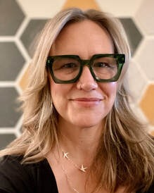

About
- Humanities Librarian | Director, AI Literacy Center | Professor (2025 – Present)
- Instruction and Digital Initiatives Librarian | Professor (2022 – 2025)
- Librarian | Assistant and Associate Professor (2006 – 2022)
Oregon State University · Laurie.Bridges@oregonstate.edu

Education
- PhD Candidate (current)
- Information Science and Communications · Universitat de Barcelona
- MLIS
- University of Washington, 2006
- MS, College Student Services Administration · minor in Women Studies
- Oregon State University, 1999
- BSEd, English
- University of Nebraska-Lincoln, 1995
Select professional involvement
- American Library Association — Member
- Association of College and Research Libraries — Member
- IMLS Grants — AI Literacy Panel Reviewer (2026)
- Oregon Media Literacy Coalition — Member (2025 – Present)
- African & Proud — Board Member (2025 – 2026)
- #EveryBookItsReader Wikimedia Campaign — Founding Member, Leadership Team (2022 – Present)
- Comitê Estratégico de Bibliotecas do WMB — Wikimedia Movement Brazil Strategy Committee for Libraries (2023 – 2024)
- Wikimedia Foundation Regional Grants Committee — North America (2021 – 2023)
- Wikimedia+Libraries International Convention — Core Planning Team (2022)